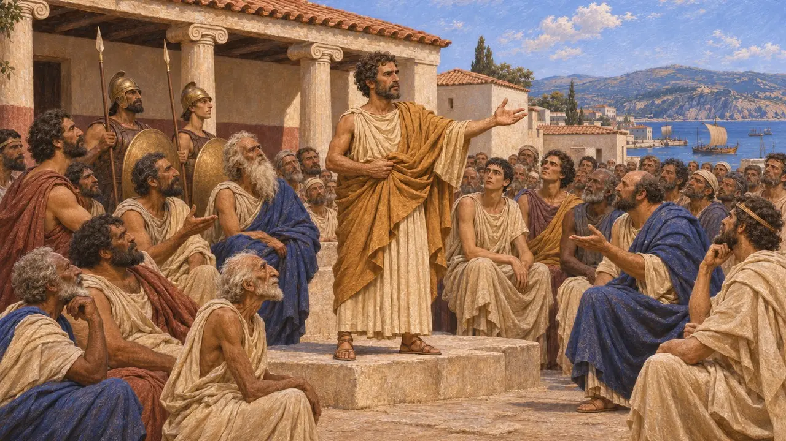
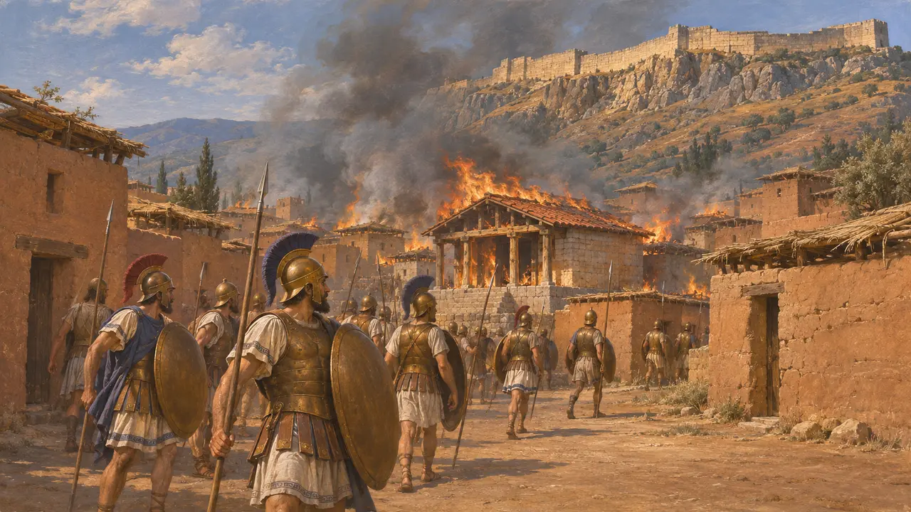
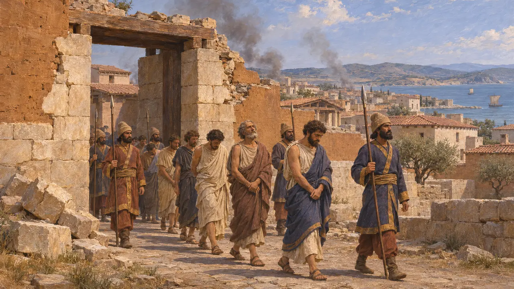
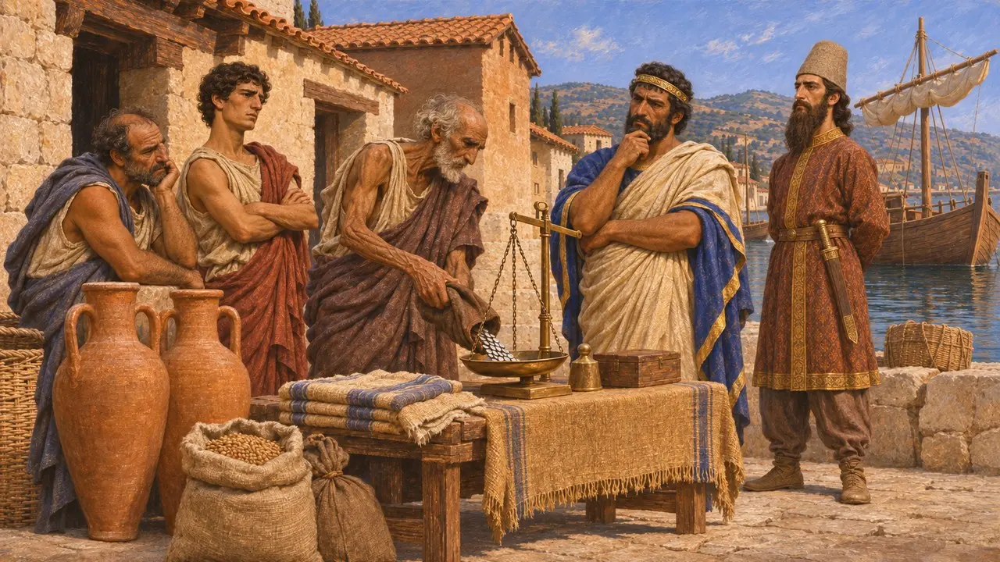
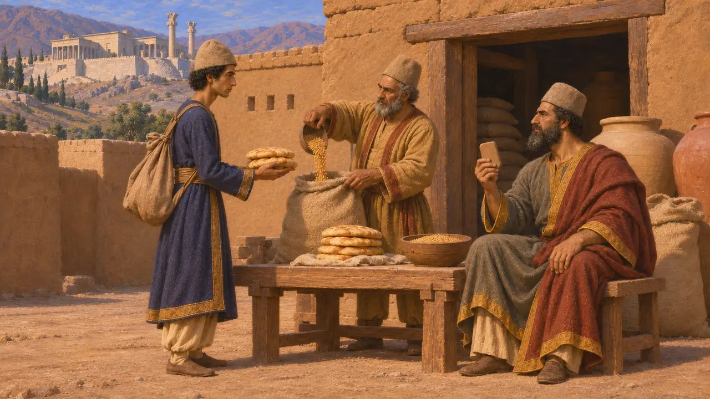

イオニアの反乱とは、小アジア西岸のギリシア人諸都市がダレイオスに対して起こした蜂起で、紀元前499年頃にミレトスで始まり、紀元前494年のミレトス陥落で鎮圧された。アテナイとエレトリアはサルディスの焼き討ちに加担し、ヘロドトスはこれをペルシアとギリシア本土との争いの発端として描いている。この反乱について知られていることのほとんどすべては、彼の『歴史』に拠る。
ゲームでは： サルディスのステージは、反乱を軸に組まれている。イオニアの港と貢納は王の手から閉ざされる。ヘロドトスの400タラントンは、カリア人やリュキア人を含む一つの徴税区全体に当たるもので、イオニアだけのものではない。

反乱の始まり
古代の記述ヘロドトスの語るところでは、この反乱は紀元前499年ごろ、ミレトスの副統治者アリスタゴラスがアルタフレネスに勧めて実行された、ナクソスへのペルシアの攻撃が失敗したことに端を発する。自らの地位を案じていたアリスタゴラスは、スーサに留め置かれていた縁者ヒスティアイオスからの密書にも促され、王に背いた。ヘロドトスによれば、彼は僭主の座を捨てたのは見せかけだけで、ミレトスで平等の権利を宣言し、他のイオニアの諸都市も僭主を追放した。
Herodotus 5.30-38

ギリシアからの援軍とサルディス炎上
古代の記述ヘロドトスによれば、スパルタのクレオメネスは、スーサが海から3か月の行程にあると知ると、援助を拒んだ。アテナイ人は20隻、エレトリア人は5隻を可決し、ヘロドトスはこれらの船を、ギリシア人にも異邦人にも災いの始まりだったと呼んでいる。紀元前498年、同盟軍はサルディスの下町を奪ったが、町はキュベベの神殿とともに焼け落ち、アルタフレネスは城塞を守り抜いた。同盟軍は帰路のエフェソス近郊で敗れ、アテナイ人は帰国した。
Herodotus 5.49-51, 5.97-103

反乱の拡大とミレトスの陥落
古代の記述サルディスののち、反乱はビュザンティオンとヘレスポントス、カリア、そしてキュプロスへと広がった。キュプロスではサラミスのオネシロスが蜂起を率いたが、1年足らずで鎮圧された。ペルシア軍はヘレスポントスの町々を奪回し、カリアでは激戦を重ねた。紀元前494年、イオニア艦隊はラデ沖で王の艦隊と相まみえ、サモス人の艦船の大半が戦列を離れた。その後ミレトスは陥落し、男たちは殺されるか連れ去られ、ディデュマの神域は焼かれた。
Herodotus 5.103-126, 6.6-21

都市が蜂起した理由
係争中ヘロドトスはこの反乱を主にアリスタゴラスとヒスティアイオスの個人的な野心によって説明し、イオニア人については同情をほとんど示さずに書いている。現代の歴史家はより広い原因を探る。ペルシアの後ろ盾で支配する僭主への反感、貢納の重さ、交易に生じたかもしれない圧迫などである。また、反乱が紀元前500年に始まったのか499年に始まったのかについても論争がある。
O. Murray, The Ionian Revolt, Cambridge Ancient History IV, 1988

ペルシア側記録の沈黙
同時代の記録ダレイオスの王碑文には、この反乱についての言及がない。ペルシセポリスの要塞文書庫の記録が、わずかに手がかりを与えてくれるかもしれない。紀元前494年初頭の粘土板には、ダティヤという人物が王のもとへ旅するための旅糧が記録されている。デイヴィッド・ルイスは、このダティヤは後にマラトンで司令官となったダティスだと論じたが、同一人物であるという確証はない。
D. M. Lewis, Datis the Mede, Journal of Hellenic Studies 100, 1980
出典
- Herodotus, Histories, books 5 and 6
- O. Murray, The Ionian Revolt, Cambridge Ancient History IV, 1988
- P. Briant, From Cyrus to Alexander, 2002
- D. M. Lewis, Datis the Mede, Journal of Hellenic Studies 100, 1980
- P. Tozzi, La rivolta ionica, 1978